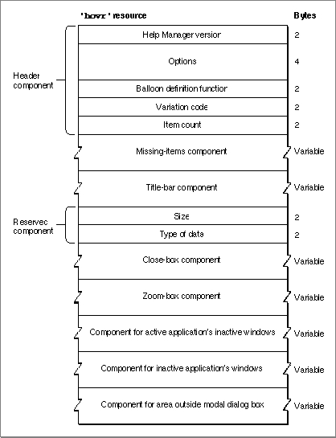
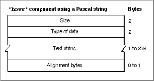
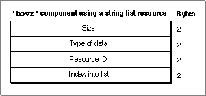
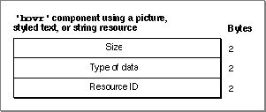
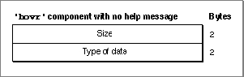

The Default Help Override Resource
The Help Manager also provides default help balloons for the title bar and the close and zoom boxes of an active window, for the windows of inactive applications, for inactive windows of an active application, and for the area outside a modal dialog box.Apple has researched and tested these help messages to ensure that they are as effective as possible for users. Normally, you don't need to override them. However, by creating a default help override resource you can override one or more of these defaults if absolutely necessary. A default help override resource is a resource of type
'hovr'. The'hovr'resource must have a resource ID greater than 128.The format of a Rez input file for an
'hovr'resource differs from its compiled output form. This section describes the structure of a Rez-compiled'hovr'resource. If you are concerned only with creating'hovr'resources, see "Overriding Other Default Help Balloons" on page 3-80 for a detailed description of how to use Rez input files to create'hovr'resources.An
'hovr'resource consists of a header component, a missing-items component, and seven additional components for various interface elements. Figure 3-46 shows the general structure of a compiled'hovr'resource.Figure 3-46 Structure of a compiled default help override (
'hovr') resource
If you examine a compiled version of an'hovr'resource, you find that the header component consists of the following elements:The Help Manager uses the order of the components in this resource to determine their purposes.
- Help Manager version. The version of the Help Manager to use. This is usually specified in a Rez input file with the
HelpMgrVersionconstant.- Options. The sum of the values of available options, described in "Specifying Options in Help Resources" beginning on page 3-22.
- Balloon definition function. The resource ID of the window definition function used for drawing the help balloon. The standard balloon definition function is of type
'WDEF'with resource ID 126; this can be specified by 0 in the Rez input file.- Variation code. A number signifying the preferred position of the help balloon relative to the hot rectangle. The balloon definition function draws the frame of the help balloon based on the variation code specified here. The eight variation codes and how they affect the standard balloon definition function are illustrated in Figure 3-4 on page 3-9.
- Item count. The value 8 for the number of components defined in the rest of this resource.
The structures of the remaining components depend on identifiers specified inside the components. The identifiers used in a Rez input file are described in "Specifying the Format for Help Messages" on page 3-21.
Each component can specify one help message, as listed here.
Figure 3-47 shows the structure of an
- Missing-items component. The Help Manager expects seven more components to follow, in the order listed here. If fewer than seven components are specified in the Rez input file, the Help Manager adds components to the end of the list until there are seven. Each component that the Help Manager adds uses the message specified in the missing-items component. The Help Manager also uses the missing-items component's help message if the input file specifies an empty string or a resource ID of 0 for any other component's help message.
- Title-bar component. The help message for title bar of the active window.
- Reserved component. This element is reserved and should have no help message. The
HMSkipItemidentifier should always be specified in the Rez input file for this component.- Close-box component. The help message for the close box of the active window.
- Zoom-box component. The help message for the zoom box of the active window.
- Component for active application's inactive windows. The help message for the inactive windows of the active application.
- Component for inactive applications' windows. The help message for the windows of inactive applications.
- Component for area outside modal box. The help message for the desktop area outside a modal dialog box or an alert box.
'hovr'component that stores its help message as a Pascal string within the'hovr'resource itself.Figure 3-47 Structure of an
'hovr'component compiled with theHMStringItemidentifier
If you examine a compiled version of an'hovr'resource, you find that a component identified in a Rez input file by theHMStringItemidentifier consists of the following elements:Figure 3-48 shows the structure of an
- Size. The number of bytes contained in this component.
- Type of data. The value 1 is specified here when the help message is stored as a Pascal string within this component.
- Text string. The help message appropriate for the component (as previously described).
- Alignment bytes. Zero or one bytes used to make the text string end on a word boundary.
'hovr'component that specifies its help message as a text string stored in a string list ('STR#') resource.Figure 3-48 Structure of an
'hovr'component compiled with theHMStringResItemidentifier
If you examine a compiled version of an'hovr'resource, you find that a component identified in a Rez input file by theHMStringResItemidentifier consists of the following elements:Figure 3-49 shows the structure of an
- Size. The number of bytes contained in this component.
- Type of data. The value 3 is specified here when the help message for this component is stored in a string list (
'STR#') resource.- Resource ID. The resource ID of an
'STR#'resource.- Index into the string list resource. A number used as an index to a particular text string within the
'STR#'resource. The Help Manager uses this text string for the help message of the appropriate component (as previously described).'hovr'component that specifies its help message in a picture ('PICT') resource, in styled text ('TEXT'and'styl') resources, or in a string ('STR ') resource.Figure 3-49 Structure of an
'hovr'component compiled with theHMPictItem,HMTEResItem, orHMSTRResItemidentifier
If you examine a compiled version of an'hovr'resource, you find that a component identified in a Rez input file by either theHMPictItem,HMTEResItem, orHMSTRResItemidentifier consists of the following elements:Figure 3-50 shows the structure of an
- Size. The number of bytes contained in this component.
- Type of data.
- The value 2 is specified here when the help message for this component is stored in a
'PICT'resource.- The value 6 is specified here when the help message for this component is stored as styled text--that is, in both
'TEXT'and'styl'resources.- The value 7 is specified here when the help message for this component is stored in an
'STR 'resource.- Resource ID.
- The resource ID of a
'PICT'resource when the value 2 is specified as the type of data. The Help Manager displays the picture stored in this resource for the help message.- The resource ID common to both a
'TEXT'and an'styl'resource when the value 6 is specified as the type of data. The Help Manager displays the styled text specified in these resources for the help message.- The resource ID of an
'STR 'resource when the value 7 is specified as the type of data. The Help Manager uses the text string stored in this resource for the help message.'hovr'component that doesn't specify a help message.Figure 3-50 Structure of an
'hovr'component compiled with theHMSkipItemidentifier
If you examine a compiled version of an'hovr'resource, you find that a component identified in the Rez input file by theHMSkipItemidentifier consists of the following elements: